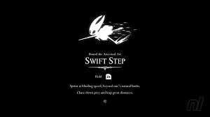
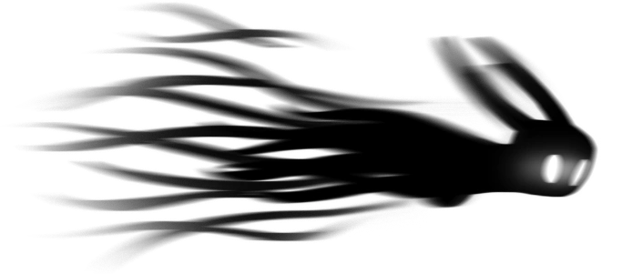

A esquiva é uma habilidade essencial para o personagem principal em Hollow Knight, permitindo que ele evite ataques inimigos com agilidade e precisão. Para realizar uma esquiva, o jogador deve pressionar o botão de salto enquanto estiver no ar, o que faz com que o personagem execute um movimento rápido para desviar de ataques. A esquiva é crucial para sobreviver aos desafios do jogo, especialmente durante batalhas contra chefes e inimigos poderosos, onde a capacidade de evitar danos pode ser a diferença entre a vitória e a derrota. Dominar a esquiva é fundamental para progredir em Hollow Knight e enfrentar os perigos do reino de Hallownest.
Ela é obtida ao avançar no jogo e desbloquear novas habilidades.

Ao longo do jogo, os jogadores podem aprimorar suas habilidades de esquiva, tornando-se mais eficientes e eficazes na evasão de ataques. A esquiva é uma parte fundamental da estratégia de combate em Hollow Knight, permitindo que os jogadores se movimentem com fluidez e enfrentem os desafios do jogo com confiança.
A versão melhor da esquiva permite uma maior velocidade e precisão na evasão, tornando o personagem mais difícil de atingir e mais eficaz em situações de combate.

O Cavaleiro pode esquivar com a sombra para baixo com o Amuleto Mestre da Esquiva equipado. Acertar a criatura segurando a tigela sem ter o Ferrão dos Sonhos Despertado faz com que um possível selo apareça sobre sua cabeça.